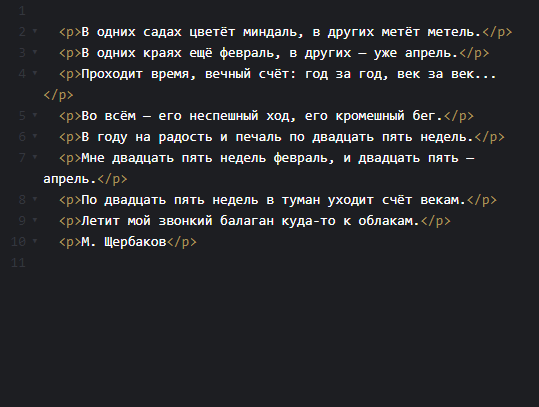
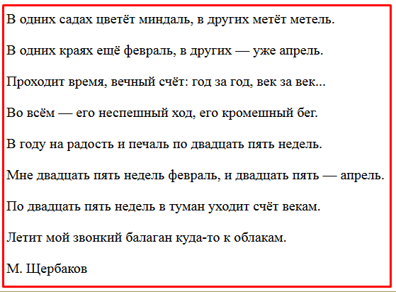
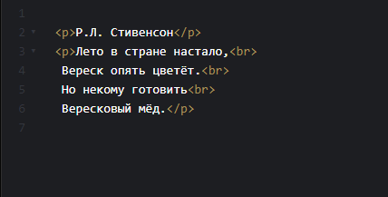
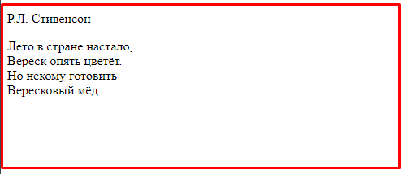
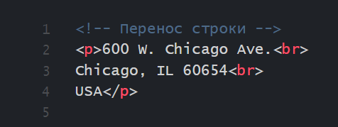
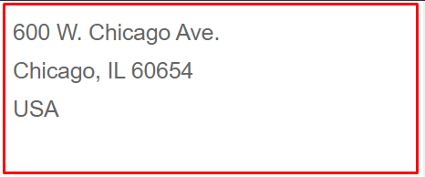

Текстовые элементы
Существует много различных форм медиа, однако текст является преобладающим. Соответственно, есть целый набор разных элементов для отображения текста на веб-странице. Сейчас мы остановимся на наиболее популярных элементах таких, как заголовки, абзацы и перенос строки.
Особенности текста в HTML
Прежде чем редактировать код веб-страницы, следует принять во внимание некоторые особенности, которые присущи HTML при работе с текстом.
Любое количество пробелов идущих подряд, в браузере отображается как один
Сколько бы вы не поставили пробелов между словами, это никак не повлияет на конечный вид текста. То же правило относится к символам табуляции и переносу текста. Строки будут отображаться на веб-странице одинаково, несмотря на их разное написание. То есть, с нормальным пробелом между словами.
Текст занимает всю ширину окна браузера
Если вы просто напишете одну длинную строку в коде HTML, то в браузере она будет отформатирована так, чтобы текст поместился по ширине экрана устройства пользователя. Под форматированием подразумевается автоматический перенос текста там, где есть пробел или дефис. Соответственно, переносы текста будут меняться в зависимости от диагонали экрана устройства и размеров окна браузера.
ЗАГОЛОВКИ
<h1>
Заголовки помогают быстро разбить содержимое и установить иерархию. Они являются ключевыми идентификаторами для пользователей, читающих страницу. HTML предлагает шесть заголовков разного уровня, которые показывают относительную важность секции, расположенной после заголовка.
Так, элемент <h1> (от англ. heading — заголовок) представляет собой наиболее важный заголовок первого уровня, а <h6> служит для обозначения заголовка шестого уровня и является наименее значительным. По умолчанию, заголовок первого уровня отображается самым крупным шрифтом жирного начертания, заголовки последующего уровня по размеру меньше.
Заголовки должны быть использованы в порядке, соответствующему содержанию страницы. Основной заголовок страницы или раздела должен быть размечен с помощью элемента <h1>, а последующие заголовки должны использовать элементы <h2>, <h3>, <h4>, <h5> и <h6>, при необходимости.
Заголовок <h1> — самый важный на странице. В него нужно включать текст, который в целом описывает содержание страницы. Очень важно, чтобы заголовок первого уровня на странице был только один.
Элементы <h1>,...,<h6> относятся к блочным элементам - они всегда начинаются с новой строки, а после них другие элементы отображаются на следующей строке. Кроме того, перед заголовком и после него добавляется пустое пространство.
Синтаксис
<h1>Заголовок первого уровня</h1>
<h2>Заголовок второго уровня</h2>
<h3>Заголовок третьего уровня</h3>
<h4>Заголовок четвертого уровня</h4>
<h5>Заголовок пятого уровня</h5>
<h6>Заголовок шестого уровня</h6>
Закрывающий тег
Обязателен.
Атрибуты
Для заголовков доступны универсальные атрибуты
class
- Определяет имя класса, которое позволяет связать элемент со стилевым оформлением.
<h2 class="имя класса">
id
- Указывает имя стилевого идентификатора.
<h2 id="имя идентификатора">
Можно одновременно задавать class и id. В таком случае, между ними обязательно должен быть пробел.
<h2 id="имя идентификатора" class="имя класса">
title
- Описывает содержимое элемента в виде подсказки, всплывающей при наведении курсора на заголовок.
<h2 title="Подсказка">
title также можно добавить через пробел к ранее заданным class и id.
<h2 id="имя идентификатора" class="имя класса" title="Подсказка">
АБЗАЦЫ (параграфы)
<p>
Основную структуру текста создают с помощью заголовков, а более мелкую выстраивают с помощью параграфов (или абзацев). Для разметки параграфов предназначен тег <p> (от английского «paragraph»).
Каждый абзац начинается с открывающего тега <p> и заканчивается закрывающим тегом </p>. В примере показано применение нескольких абзацев.
Элемент <p> является блочным и всегда начинается с новой строки. Абзацы текста идущие друг за другом разделяются между собой отбивкой, т.е. расстоянием большим, чем расстояние между строк. Величиной отбивки можно управлять с помощью стилей.
 Таким образом, тег <p> позволяет явно выделять параграфы, группируя элементы с фразовым типом содержимого.
Кроме того, это могут быть не только блоки текста, а, например, изображения, ссылки или поля ввода.
При этом, не все теги могут быть включены в <p>. Например, внутри абзаца не могут располагаться другие абзацы, а также крупные структурные теги, заголовки, формы, списки, таблицы.
Синтаксис
<p>Текст</p>
Закрывающий тег
Рекомендуется.
Атрибуты
Для этого элемента доступны универсальные атрибуты
class
- Определяет имя класса, которое позволяет связать элемент со стилевым оформлением.
<p class="name">
id
- Указывает имя стилевого идентификатора.
<p id="имя идентификатора">
Можно одновременно задавать class и id. В таком случае, между ними обязательно должен быть пробел.
<p id="name" class="name">
Перенос строк
<br>
Элемент <br> (от англ. line break — перенос строки) устанавливает перевод строки в том месте, где он находится. В отличие от элемента <p>, использование <br> не добавляет пустой отступ перед строкой.
 Кстати, не стоит злоупотреблять применением <br>, только для того, чтобы перенести строку. Переносы строк не должны использоваться для тематической группировки содержимого. Абзацы или другие элементы подходят для этого лучше. Переносы строк специально используются там, где они выступают как часть содержимого, например, в адресах и стихах.
 Синтаксис
Текст<br> текст
Закрывающий тег
Не требуется.
Специальные символы
Специальные символы включают в себя различные знаки препинания, буквы с диакритическими знаками и символы. Когда они набирается непосредственно в HTML, то могут быть неправильно поняты или ошибочно приняты за другую букву, поэтому должны быть кодированы.
Например, любые теги никак не показываются в окне браузера, поскольку воспринимаются браузером как команды для вставки элементов и изменения их свойств. Но иногда требуется на веб-странице вывести теги, например, для демонстрации HTML-кода. В этом случае используйте спецсимволы < и > для замены угловых скобок < и >. При этом тег < p > будет выглядеть в коде, как < p >
Каждый специальный символ начинается с амперсанда ( & ) и заканчивается точкой с запятой ( ; ). Всё, что находится между ними, является уникальным кодом символа, будь это имя или число.
Например, мы могли бы кодировать:
✔ слово « resumé » как « resumé »
✔ Дефис (средняя черта) « 24–26 » как « 24–26 » ( Можно, конечно, и « минус » влепить 24-26. Разницу видно.)
✔ Тире (длинная черта) « 1 мая — Киев » как « 1 мая—Киев »
✔ Копирайт (символ авторского права) « © » как « © »
► Для справки, длинный список кодов символов можно найти на Copy Paste Character.